flowchart LR M[Sie werfen die M√ºnze] --> T["T (Treffer) ü•≥"] M --> N["N (Niete) üìö"]
3 Hallo, Wahrscheinlichkeit
3.1 Lernsteuerung
3.1.1 Position im Modulverlauf
Abbildung 1.1 gibt einen Überblick zum aktuellen Standort im Modulverlauf.
3.1.2 Überblick
Dieses Kapitel hat die Wahrscheinlichkeitstheorie (synonym: Wahrscheinlichkeitsrechnung) bzw. das Konzept der Wahrscheinlichkeit zum Thema.1 Es geht sozusagen um die Mathematik des Zufalls.
3.1.3 Wozu brauche ich dieses Kapitel?
Im wirklichen Leben sind Aussagen (Behauptungen) so gut wie nie sicher.
- “Weil sie so schlau ist, ist sie erfolgreich.”
- “In Elektroautos liegt die Zukunft.”
- “Das klappt sicher, meine Meinung.”
- “Der nächste Präsident wird XYZ.”
Aussagen sind nur mehr oder weniger (graduell) sicher. Wir können die Regeln der Wahrscheinlichkeitslogik verwenden, um den Grad der Sicherheit (von ganz unsicher bis ganz sicher) zu präzisieren. Daher sagt man auch, Wahrscheinlichkeit sei die Logik der Wissenschaft (Jaynes & Bretthorst, 2003).
3.1.4 Lernziele
Nach Absolvieren des jeweiligen Kapitels sollen folgende Lernziele erreicht sein.
Sie können …
- die Grundbegriffe der Wahrscheinlichkeitstheorie erläuternd definieren
- die drei Arten der direkten Ermittlung von Wahrscheinlichkeit erläutern
- typische Relationen (Operationen) von Ereignissen anhand von Beispielen veranschaulichen
- erläutern, was eine Zufallsvariable ist
3.1.5 Begleitliteratur
Lesen Sie zur Begleitung dieses Kapitels Bourier (2011), Kap. 2-4.
3.1.6 Eigenstudium
Wichtig
Dieses Kapitel ist selbständig im Eigenstudium vorzubereiten vor dem Unterricht. Lesen Sie dazu die angegebene Literatur.\(\square\)
3.1.7 Prüfungsrelevanter Stoff
Der Stoff dieses Kapitels deckt sich (weitgehend) mit Bourier (2011), Kap. 2-4. Weitere Übungsaufgaben finden Sie im dazugehörigen Übungsbuch, Bourier (2022).
Hinweis
In Ihrer Hochschul-Bibliothek kann das Buch als Ebook verfügbar sein. Prüfen Sie, ob Ihr Dozent Ihnen weitere Hilfen im geschützten Bereich (Moodle) eingestellt hat.\(\square\)
3.1.8 Zentrale Begriffe
3.1.8.1 Grundbegriffe
- Zufallsvorgang (Zufallsexperiment)
- Elementarereignis
- Ereignisraum
- Zufallsereignis (zufälliges Ereignis)
- Sicheres Ereignis
- Unmögliches Ereignis
3.1.8.2 Wahrscheinlichkeitsbegriffe
- Klassische Wahrscheinlichkeit (LaPlace’sche Wahrscheinlichkeit)
- Statistische (empirische) Wahrscheinlichkeitsermittlung
- Subjektive (Bayes) Wahrscheinlichkeitsermittlung
3.1.8.3 Wahrscheinlichkeitsrelationen
- Vereinigung von Ereignissen
- Schnitt(menge) von Ereignissen
- Komplementärereignis
- Vollständiges Ereignissystem
- Anforderungen an eine Definition von Wahrscheinlichkeit
3.1.8.4 Wahrscheinlichkeitsrechnung
- Allgemeiner Additionsssatz
- Disjunkte Ereignisse
- Additionssatz für disjunkte Ereignisse
- Bedingte Wahrscheinlichkeit
- (Stochastische) Unabhängigkeit
- Baumdiagramm für gemeinsame Wahrscheinlichkeit
- Allgemeiner Multiplikationssatz
- Multiplikationssatz für unabhängige Ereignisse
- Totale Wahrscheinlichkeit
- Satz von Bayes
3.1.9 Begleitvideos
3.2 Grundbegriffe
Beispiel 3.1 Klassisches Beispiel für einen Zufallsvorgang ist das (einmalige oder mehrmalige) Werfen einer Münze.\(\square\)
Werfen Sie eine Münze! Diese hier zum Beispiel:

Quelle: By OpenClipartVectors, CC0
Wiederholen Sie den Versuch 10 Mal.
Das reicht Ihnen nicht? Okay, wiederholen Sie den Versuch 100, nein 1000, nein: \(10^6\) Mal.2
Notieren Sie als Ergebnis, wie oft die Seite mit der Zahl oben liegen kommt (“Treffer”).\(\square\)
Oder probieren Sie die App der Brown University, wenn Sie keine Sehnenscheidenentzündung bekommen wollen.
Definition 3.1 (Zufallsvorgang) Ein Zufallsvorgang oder Zufallsexperiment ist eine einigermaßen klar beschriebene Tätigkeit, deren Ergebnis nicht sicher ist. Allerdings ist die Menge möglicher Ergebnisse bekannt und die Wahrscheinlichkeit für alle Ergebnisse kann quantifiziert werden.\(\square\)
Übungsaufgabe 3.1 Nennen Sie Beispiele für Zufallsvorgänge!3
Vorsicht
Zufall heißt nicht, dass ein Vorgang keine Ursachen hätte. So gehorcht der Fall einer Münze komplett den Gesetzen der Gravitation. Würden wir diese Gesetze und die Ausgangsbedingungen (Luftdruck, Fallhöhe, Oberflächenbeschaffenheit, Gewichtsverteilungen, …) exakt kennen, könnten wir theoretisch sehr genaue Vorhersagen machen. Der “Zufall” würde aus dem Münzwurf verschwinden. Man sollte “Zufall” also besser verstehen als “unbekannt”.\(\square\)
Übungsaufgabe 3.2 Mit dieser App können Sie Würfelwürfe simulieren und die Ausgänge dieses Zufallsexperiments beobachten.\(\square\)
Definition 3.2 (Ereignisraum) Die möglichen Ergebnisse eines Zufallvorgangs fasst man als Menge mit dem Namen Ereignisraum4 zusammen. Man verwendet den griechischen Buchstaben \(\Omega\) für diese Menge. Die Elemente \(\omega\) (kleines Omega) von \(\Omega\) nennt man Ergebnisse.\(\square\)
Beispiel 3.2 Beobachtet man beim Würfelwurf (s. Abbildung 3.8) die oben liegende Augenzahl, so ist
\[\Omega = \{ 1,2,3,4,5,6 \} = \{⚀, ⚁, ⚂, ⚃, ⚄, ⚅\}\]
ein natürlicher Grundraum (Henze, 2019).\(\square\)
Die Wahrscheinlichkeitsrechnung baut auf der Mengenlehre auf, daher wird die Notation der Mengenlehre hier verwendet.
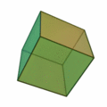
Definition 3.3 (Ereignis) Jede Teilmenge5 von \(\Omega\) heißt Ereignis; \(A \subseteq \Omega\) .\(\square\)
Beispiel 3.3 Beim Mensch-ärger-dich-nicht Spielen habe ich eine 6 geworfen.6 Das Nennen wir das Ereignis \(A\): “Augenzahl 6 liegt oben” und schreiben in Kurzform:
\(A= \{6\}\square\)
Beispiel 3.4 Sie werfen eine Münze (Sie haben keinen Grund, an ihrer Fairness zu zweifeln). “Soll ich jetzt lernen für die Klausur (Kopf) oder lieber zur Party gehen (Zahl)?”
Abbildung 3.2 zeigt die möglichen Ausgänge (T wie Treffer (Party) und N (Niete, Lernen)) dieses Zufallexperiments.
Das Ereignis Zahl ist eingetreten! Treffer! Glück gehabt!7\(\square\)
Definition 3.4 (Unmögliches und sicheres Ereignis) Die leere Menge \(\varnothing\) heißt das umögliche, der Grundraum \(\Omega\) heißt das sichere Ereignis. \(\square\)
Beispiel 3.5 (Unmögliches Ereignis) Alois behauptet, er habe mit seinem Würfel eine 7 geworfen. Schorsch ergänzt, sein Würfel liege auf einer Ecke, so dass keine Augenzahl oben liegt. Draco hat seinen Würfel runtergeschluckt. Dracos und Alois’ Ereignisse sind unmögliche Ereignisse, zumindest nach unserer Vorstellung des Zufallsexperiments.\(\square\)
Beispiel 3.6 (Sicheres Ereignis) Nach dem der Würfel geworfen wurde, liegt eine Augenzahl zwischen 1 und 6 oben.\(\square\)
Definition 3.5 (Elementarereignis) Jede einelementige Teilmenge \(\{\omega\}\) von \(\Omega\) heißt Elementarereignis (häufig mit \(A\) bezeichnet). 8 \(\square\)
Beispiel 3.7 (Elementarereignis)
Sie spielen Mensch-ärger-dich-nicht. Und brauchen dringend eine
6. Sie würfeln. Das Ereignis \(A = \{1\}\) tritt ein.9Sie schreiben eine Statistik-Klausur. Irgendwie haben Sie das Gefühl, das Ergebnis sei ein Zufallsexperiment… Jedenfalls können nach Adam Riese zwei Dinge passieren: \(\Omega= \{\text{bestehen, nicht bestehen}\}\). Das erste der beiden Elementarereignisse tritt ein. Yeah!
Sie führen eine Studie durch zur Wirksamkeit einer Lern-App. Es ist nicht klar, ob die App wirklich was bringt für den Lernerfolg. Vereinfacht gesprochen ist der Grundraum dieses Experiments: \(\Omega = \{\text{schadet, bringt nichts, nützt}\}\). Die Daten sprechen für das Ereignis \(A = \{\text{bringt nichts}\}\).
Definition 3.6 (Vollständiges Ereignissystem) Wird der Grundraum \(\Omega\) vollständig in paarweis disjunkte Ereignisse zerlegt, so bilden diese Ereignisse ein vollständiges Ereignissystem, s. Abbildung 3.3.\(\square\)
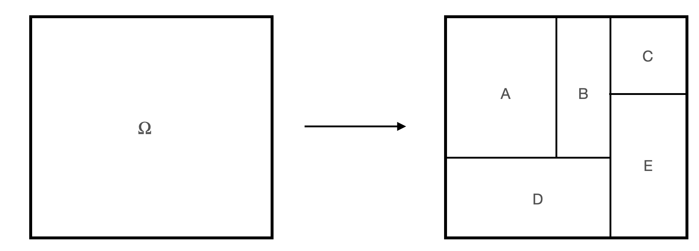
Beispiel 3.8 Sei \(\Omega\) der typische Ereignisraum des Würfelwurfs. Wir zerlegen den Grundraum in zwei Ereignisse, \(A\) “gerade Zahlen”, und \(B\) “ungerade Zahlen”. Damit haben wir ein vollständiges Ereignissystem erstellt, s. Abbildung 3.4.
\[\begin{align} A = \{2,4,6\} \qquad \hfill \boxed{\color{gray}{1}\; \boxed{\color{black}{2}}\; \color{gray}{3}\; \boxed{\color{black}{4}}\; \color{gray}{5}\; \boxed{\color{black}{6}}\;} \\ B = \{1,3,5\} \qquad \hfill \boxed{\boxed{\color{black}{1}}\; \color{gray}{2}\; \boxed{\color{black}{3}}\; \color{gray}{4}\; \boxed{\color{black}{5}}\; \color{gray}{6}\; } \\ \hline \\ \Omega = \{1,2,3,4,5,6\} \qquad \hfill \boxed{1\; 2\; 3\; 4\; 5\; 6 } \end{align}\]
Ein Beispiel für ein vollständiges Ereignissystem
Beispiel 3.9 Sei \(\Omega\) der typische Ereignisraum des Würfelwurfs. Wir zerlegen den Grundraum in zwei Ereignisse, \(A\) “1,2,3”, und \(B\) “4,5,6”. Damit haben wir ein vollständiges Ereignissystem erstellt, s. Abbildung 3.4.
\[\begin{align} A = \{1,2,3\} \qquad \qquad \hfill \boxed{\boxed{ \color{black}{1\; 2\; 3}}\; \color{gray}{4\; 5\; 6}} \\ B = \{4,5, 6\} \qquad \qquad \hfill \boxed{\color{gray}{1 \; 2 \; 3}\; \boxed{\color{black}{4\; 5 \; 6}}} \\ \newline \hline \\ \Omega = \{1,2,3,4,5,6\} \qquad \qquad \hfill \boxed{1\; 2\; 3\; 4\; 5\;6} \end{align}\]
Definition 3.7 (Mächtigkeit) Die Anzahl der Elementarereignisse eines Ereignismraums nennt man die Mächtigkeit (des Ereignisraums).10\(\square\)
Die Mächtigkeit von \(\Omega\) bezeichnet man mit dem Symbol \(|\Omega|\).
Beispiel 3.10 Beim Wurf eines Würfels mit \(\Omega=\{1,2,3,4,5,6\}\) gibt es 6 Elementarereignisse. Die Mächtigkeit ist also 6: \(|\Omega|=6\).\(\square\)
3.3 Was ist Wahrscheinlichkeit?
Wir haben schon mit Definition 2.9 eine erste Definition von Wahrscheinlichkeit versucht. Jetzt gehen wir die Sache noch etwas näher an und vergleichen verschiedene Ideen (Definitionen) von Wahrscheinlichkeit.
3.3.1 Formallogische Definitition
Die formallogische Konzeption von Wahrscheinlichkeit sieht Wahrscheinlichkeit als Erweiterung der formalen Logik (Jaynes & Bretthorst, 2003). 11 In der formalen Logik ist ein Ereignis entweder falsch oder wahr. In der formallogischen Konzeption wird der Platz zwischen “falsch” (0) und “richtig” (1) als die Wahrscheinlichkeit \(0<p<1\), gesehen (Briggs, 2016), s. Abbildung 3.6.
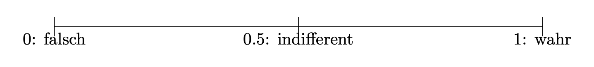
Nach dieser “Wahrscheinlichkeitslogik” kann man ein Ereignis, von dessen Eintreten man “wenig überzeugt” ist, z.B. mit 0.2 quantifizieren. Hingegen einem Ereignis, von man “recht sicher” ist, mit 0.8 quantifizieren, s. Abbildung 3.7.
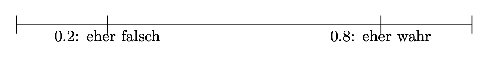
Definition 3.8 (Indifferenzprinzip) Das Indifferenzprinzip (synonym: Prinzip des unzureichenden Grundes) besagt, dass in Abwesenheit jeglicher Informationen, die bestimmte Ereignisse bevorzugen oder benachteiligen würden, alle möglichen Ereignisse als gleich wahrscheinlich angesehen werden sollten. \(\square\)
Vor uns liegt ein Würfel. Schlicht, ruhig, unbesonders. Wir haben keinen Grund anzunehmen, dass eine seiner \(n=6\) Seiten bevorzugt nach oben zu liegen kommt. Jedes der sechs Elementarereignisse ist uns gleich plausibel; der Würfel erscheint uns fair. In Ermangelung weiteres Wissens zu unserem Würfel gehen wir schlicht davon aus, dass jedes der \(n\) Elementarereignis gleich wahrscheinlich ist. Es gibt keinerlei Notwendigkeit, den Würfel in die Hand zu nehmen, um zu einer Wahrscheinlichkeitsaussage auf diesem Weg zu kommen. Natürlich könnten wir unsere Auffassung eines fairen Würfels testen, aber auch ohne das Testen können wir eine stringente Aussage (basierend auf dem Indifferenzprinzip (s. Definition 3.8) der \(n\) Elementarereignisse) zur Wahrscheinlichkeit eines bestimmten (Elementar-)Ereignisses \(A\) kommen (Briggs, 2016), s. Theorem 3.1.
Theorem 3.1 (Indifferenzprinzip) \[Pr(A) = \frac{1}{n}= \frac{1}{|\Omega|} \quad \square\]
Beispiel 3.11 Sei \(A\) = “Der Würfel wird beim nächsten Wurf eine 6 zeigen.” Die Wahrscheinlichkeit für \(A\) ist \(1/6. \square\)
Definition 3.9 (Laplace-Experimt) Ein Zufallsexperiment, bei dem alle Elementarereignisse dieselbe Wahrscheinlichkeit haben, nennt man man ein Laplace-Experiment, s. Theorem 3.2. \(\square\)
In Erweiterung von Theorem 3.1 können wir für ein Laplace-Experiment schreiben, s. Theorem 3.2.
Theorem 3.2 (Laplace-Experiment) \[Pr(A)=\frac{\text{Anzahl Treffer}}{\text{Anzahl möglicher Ergebnisse}} \quad \square\]
3.3.2 Frequentistische Definition
In Ermangelung einer Theorie zum Verhalten eines (uns) unbekannten Zufallsvorgangs und unter der Vermutung, dass die Elementarereignisse nicht gleichwahrscheinlich sind, bleibt uns ein einfacher (aber aufwändiger) Ausweg: Ausprobieren.
Angenommen, ein Statistik-Dozent, bekannt für seine Vorliebe zum Glücksspiel und mit scheinbar endlosen Glückssträhnen (er wirft andauernd eine 6), hat seinen Lieblingswürfel versehentlich liegen gelassen. Das ist die Gelegenheit! Sie greifen sich den Würfel, und … Ja, was jetzt? Nach kurzer Überlegung kommen Sie zum Entschluss, den Würfel einem “Praxistest” zu unterziehen: Sie werfen ihn 1000 Mal (Puh!) und zählen den Anteil der 6. Falls der Würfel fair ist, müsste gelten \(Pr(A=6)=1/6\approx .17\). Schauen wir mal!
Und hier der Anteil von 6 im Verlauf unserer Würfe, s. Abbildung 3.8.
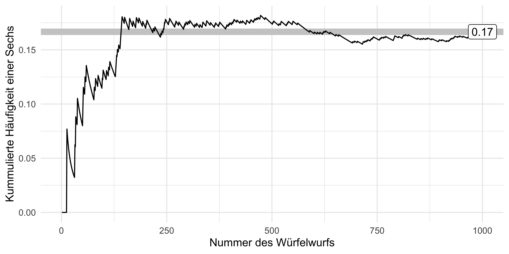
Hm, auf den ersten Blick ist kein (starkes) Anzeichen für Schummeln bzw. einen gezinkten Würfel zu finden.
3.3.3 Subjektive Definition
Um subjektiv zu einer Wahrscheinlichkeit zu kommen, sagt man einfach seine Meinung. Das hört sich natürlich total plump an. Und tatsächlich besteht die Gefahr, dass die so ermittelten Wahrscheinlichkeiten aus der Luft gegriffen, also haltlos, sind.
Allerdings kann diese Art von Wahrscheinlichkeitsermittlung auch sehr wertvoll sein. In komplizierten Situation im echten Leben12 kommt man oft in die Situation, dass weder die formallogischen noch die frequentistische Variante verwendet werden kann. Dann muss man auf Schätzungen, Vorwissen, Erfahrung, theoretischen Überlegungen etc. zurückgreifen.
3.3.4 Kolmogorovs Definition
Wir richten eine Reihe von Forderungen an eine Definition von bzw. an das Rechnen mit Wahrscheinlichkeiten, die direkt plausibel erscheinen:13
- Nichtnegativität: Die Wahrscheinlichkeit eines Ereignisses kann nicht negativ sein.
- Normierung: Das sichere Ereignis hat die Wahrscheinlichkeit 1 bzw. 100%: \(Pr(\Omega)=1\); das unmögliche Ereignis hat die Wahrscheinlichkeit 0: \(Pr(\emptyset)=0\).
- Additivität. Sind \(A\) und \(B\) disjunkt, dann ist die Wahrscheinlichkeit, dass mindestens eines der beiden Ereignisse eintritt (\(A\cup B\)) gleich der Summe der beiden Einzelwahrscheinlichkeiten von \(A\) und \(B\).
3.4 Zufallsvariable
Beispiel 3.12 Schorsch sucht eine Betreuerin für seine Abschlussarbeit. An die ideale Betreuerin setzt er 4 Kriterien an: a) klare, schriftliche fixierte Rahmenbedingungen, b) viel Erfahrung, c) guten Ruf und d) interessante Forschungsinteressen. Je mehr dieser 4 Kriterien erfüllt sind, desto besser. Schorsch geht davon aus, dass die 4 Kriterien voneinander unabhängig sind (ob eines erfüllt ist oder nicht, ändert nichts an der Wahrscheinlichkeit eines anderen Kriteriums). Schorsch interessiert sich also für die Anzahl der erfüllten Kriterien, also eine Zahl von 0 bis 4. Er schätzt die Wahrscheinlichkeit für einen “Treffer” in jedem seiner 4 Kriterien auf 50%. Viel Glück, Schorsch! Sein Zufallsexperiment hat 16 Ausgänge (Knoten 16 bis 31), s. Abbildung 3.9 und Tabelle 3.1. Ganz schön komplex. Eigentlich würden ihm ja eine Darstellung mit 5 Ergebnissen, also der “Gutachter-Score” von 0 bis 4 ja reichen. Wie können wir es übersichtlicher für Schorsch?\(\square\)

| i | Elementarereignis | Pr(EE) | Trefferzahl | Pr(Trefferzahl) |
|---|---|---|---|---|
| 1 | NNNN | 1/16 | 0 | 1/16 |
| 2 | NNNT | 1/16 | 1 | 1/4 |
| 3 | NNTN | 1/16 | 1 | 1/4 |
| 4 | NTNN | 1/16 | 1 | 1/4 |
| 5 | TNNN | 1/16 | 1 | 1/4 |
| 6 | NNTT | 1/16 | 2 | … |
| … | … | … | … | … |
Schorsch braucht also eine übersichtlichere Darstellung; die Zahl der Treffer und ihre Wahrscheinlichkeit würde ihm ganz reichen. In vielen Situationen ist man an der Anzahl der Treffer interessiert. Die Wahrscheinlichkeit für eine bestimmte Trefferanzahl bekommt man einfach durch Addieren der Wahrscheinlichkeiten der zugehörigen Elementarereignisse, s. Tabelle 3.1. Hier kommt die Zufallsvariable ins Spiel. Wir nutzen sie, um die Anzahl der Treffer in einem Zufallsexperiment zu zählen.
Definition 3.10 (Zufallsvariable) Die Zuordnung der Elementarereignisse eines Zufallsexperiments zu genau einer Zahl \(\in \mathbb{R}\) nennt man Zufallsvariable.\(\square\)
Die den Elementarereignissen zugewiesenen Zahlen nennt man Realisationen oder Ausprägungen der Zufallsvariablen.
Beispiel 3.13 (Lotto) Ein Lottospiel hat ca. 14 Millionen Elementarereignisse. Die Zufallsvariable “Anzahl der Treffer” hat nur 7 Realisationen: 0,1,…,6.\(\square\)
Es hat sich eingebürgert, Zufallszahlen mit \(X\) zu bezeichnen (oder anderen Buchstaben weit hinten aus dem Alphabet).
Man schreibt für eine Zufallsvariable kurz: \(X: \Omega \rightarrow \mathbb{R}\). “X ist eine Zufallsvariable, die jedem Elementarereignis \(\omega\) eine reelle Zahl zuordnet.” Um die Vorschrift der Zuordnung genauer zu bestimmen, kann man folgende Kurzschreibweise nutzen:
\({\displaystyle X(\omega )={\begin{cases}1,&{\text{wenn }}\omega ={\text{Kopf}},\\[6pt]0,&{\text{wenn }}\omega ={\text{Zahl}}.\end{cases}}}\)
Abbildung 3.10 stellt diese Abbildung dar.
flowchart LR
subgraph A[Ereignis]
Kopf
Zahl
end
subgraph B[Realisation]
null[0]
eins[1]
end
subgraph C[Wahrscheinlichkeit]
half[50%]
end
Kopf --> null
Zahl --> eins
null --> half
eins --> half
Zufallsverteilungen kann im zwei Artein einteilen:
- diskrete Zufallsvariablen
- stetige Zufallsvariablen
3.4.1 Diskrete Zufallsvariable
3.4.1.1 Grundlagen
Eine diskrete Zufallsvariable ist dadurch gekennzeichnet, dass nur bestimmte Realisationen möglich sind, zumeist natürliche Zahlen, wie 0, 1, 2,…, . Abbildung 3.11 versinnbildlicht die Zufallsvariable des “Gutachter-Scores”, s. Beispiel 3.12.
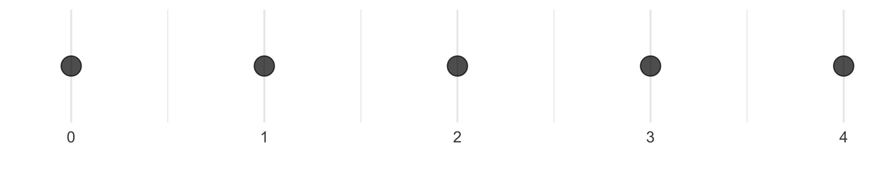
Beispiel 3.14 (Diskrete Zufallsvariablen)
- Anzahl der Bewerbungen bis zum ersten Job-Interview
- Anzahl Anläufe bis zum Bestehen der Statistik-Klausur
- Anzahl der Absolventen an der HS Ansbach pro Jahr
- Anzahl Treffer beim Kauf von Losen
- Anzahl Betriebsunfälle
- Anzahl der Produkte in der Produktpalette\(\square\)
Beispiel 3.15 Der zweifache Würfelwurf ist ein typisches Lehrbuchbeispiel für eine diskrete Zufallsvariable. 14 Hier ist \(S\)15 die Augensumme des zweifachen Würfelwurfs und \(S\) ist eine Zahl zwischen 2 und 12. Für jede Realisation \(X=x\) kann man die Wahrscheinlichkeit berechnen, Abbildung 3.12 versinnbildlicht die Wahrscheinlichkeit für jede Realisation von \(X\).\(\square\)
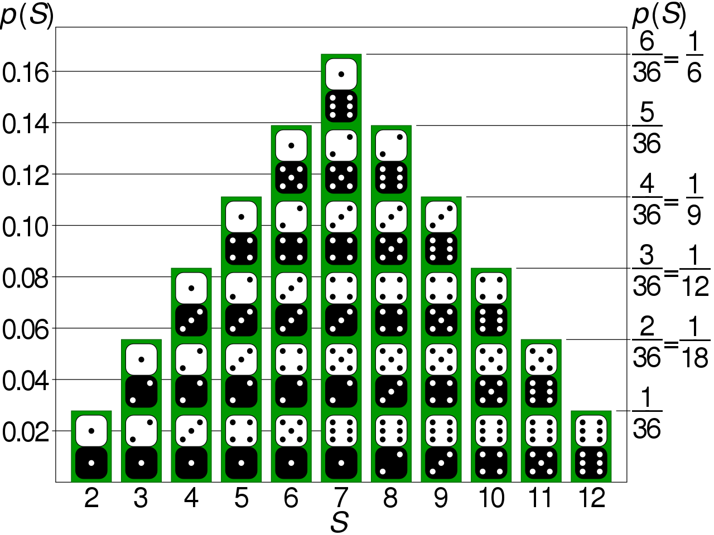
Wahrscheinlichkeitsverteilungen dienen dazu, den Realisationen einer Zufallsvariablen eine Wahrscheinlichkeit zuzuordnen.
Definition 3.11 (Diskrete Wahrscheinlichkeitsverteilung) Eine diskrete Wahrscheinlichkeitsverteilung der (diskreten) Zufallsvariablen \(X\) ordnet jeder der \(k\) Ausprägungen \(X=x\) eine Wahrscheinlichkeit \(p\) zu.\(\square\)
Beispiel 3.16 (Wahrscheinlichkeit des Geschlechts bei der Geburt) So hat die Variable Geschlecht eines Babies die beiden Ausprägungen Mädchen und Junge mit den Wahrscheinlichkeiten \(p_M = 51.2\%\) bzw. \(p_J = 48.8\%\), laut einer Studie (Gelman et al., 2021).\(\square\)
Zwischen der deskriptiven Statistik und der Wahrscheinlichkeitstheorie bestehen enge Parallelen, Tabelle 3.2 stellt einige zentrale Konzepte gegenüber.
| Wahrscheinlichkeitstheorie | Desktiptive.Statistik |
|---|---|
| Zufallsvariable | Merkmal |
| Wahrscheinlichkeit | relative Häufigkeit, Anteil |
| Wahrscheinlichkeitsfunktion | einfache relative Häufigkeitsverteilung |
| Verteilungsfunktion | kumulierte relative Häufigkeitsverteilung |
| Erwartungswert | Mittelwert |
| Varianz | Varianz |
Eine Verteilung zeigt, welche Ausprägungen eine Variable aufweist und wie häufig bzw. wahrscheinlich diese sind. Einfach gesprochen veranschaulicht eine Balken- oder Histogramm eine Verteilung. Man unterscheidet Häufigkeitsverteilungen (s. Abb. Abbildung 3.14) von Wahrscheinlichkeitsverteilungen (Abb. Abbildung 3.13).
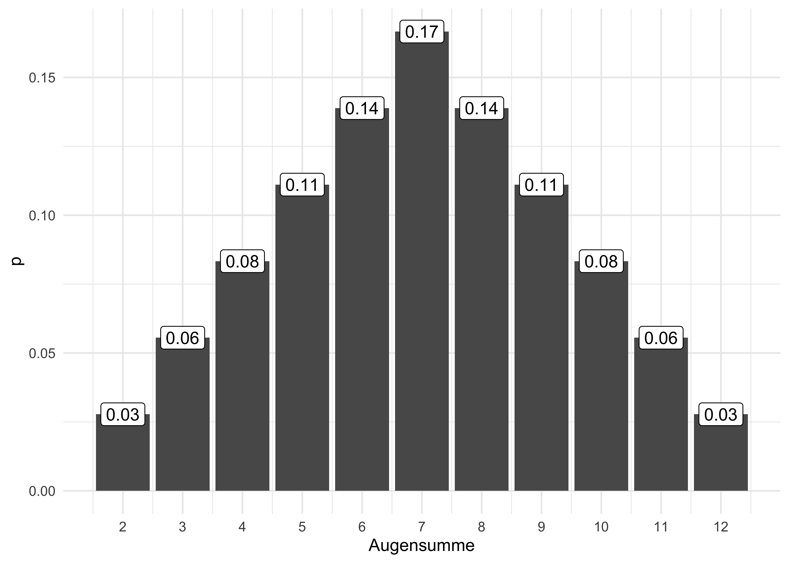

Beispiel 3.17 (Wahrscheinlichkeitsfunktion eines Würfels) Abbildung 3.15 zeigt die Wahrscheinlichkeitsfunktion eines einfachen Würfelwurfs.\(\square\)
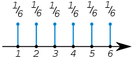
Die Häufigkeitsverteilung eines diskreten Merkmals \(X\) mit \(k\) Ausprägungen zeigt (vgl. Tabelle 3.3), wie häufig die einzelnen Ausprägungen sind. So hat die Variable Zylinder (in einem Datensatz) etwa die Ausprägungen 4,6 und 8.\(\square\)

cyl und hp (diskretisiert in 10 Körbe oder Gruppen)
Abb. Abbildung 3.16, links, visualisiert die Häufigkeitsverteilung von cyl. Ein stetiges Merkmal, wie hp (PS-Zahl), lässt sich durch Klassenbildung in ein diskretes umwandeln (diskretisieren), s. Abb. Abbildung 3.16, rechts.
3.4.1.2 Wahrscheinlichkeitsfunktion
Definition 3.12 (Wahrscheinlichkeitsfunktion) Die Funktion \(f\), die den möglichen Realisationen \(x_i\) der diskreten Zufallsvariablen \(X\) die Eintrittswahrscheinlichkeiten zuordnet, heißt Wahrscheinlichkeitsfunktion.\(\square\)
Beispiel 3.18 Die Wahrscheinlichkeitsfunktion für \(X\) “Augensumme im zweifachen Würfelwurf” ist in Abbildung 3.13 visualisiert.\(\square\)
Beispiel 3.19 Die Wahrscheinlichkeitsfunktion für \(X\) “Treffer im einfachen Münzwurf, mit Zahl ist Treffer” ist \(Pr(X=1)=1/2.\), vgl. Abbildung 3.10.\(\square\)
üí° Einfach gesprochen gibt die Wahrscheinlichkeitsfunktion die Wahrscheinlichkeit einer bestimmten Realisation einer Zufallsvariable an.
3.4.1.3 Verteilungsfunktion
Definition 3.13 (Verteilungsfunktion) Die Verteilungsfunktion \(F\) gibt die Wahrscheinlichkeit an, dass die diskrete Zufallsvariable \(X\) eine Realisation annimmt, die kleiner oder gleich \(x\) ist.\(\square\)
Die Berechnung von \(F(x)\) erfolgt, indem die Wahrscheinlichkeiten aller möglichen Realisationen \(x_i\), die kleiner oder gleich dem vorgegebenen Realisationswert \(x\) sind, addiert werden:
\(F(x) = \sum_{x_ \le x} Pr(X=x_i).\)
Die Verteilungsfunktion ist das Pendant zur kumulierten Häufigkeitsverteilung, vgl. Abbildung 3.17 und Abbildung 3.18: Was die kumulierte Häufigkeitsverteilung für Häufigkeiten ist, ist die Verteilungsfunktion für Wahrscheinlichkeiten.


3.4.2 Stetige Zufallsvariablen
üì∫ Verteilungen metrischer Zufallsvariablen
Abbildung 3.19 versinnbildlicht die stetige Zufallsvariable “Körpergröße”, die (theoretisch, in Annäherung) jeden beliebigen Wert zwischen 0 und (vielleicht) 2 Meter annehmen kann.
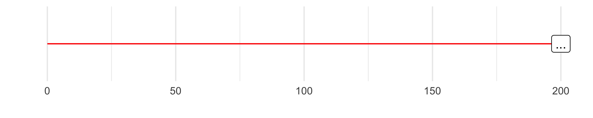
Definition 3.14 (Stetige Zufallsvariable) Eine stetige Zufallsvariable gleicht einer diskreten, nur dass alle Werte im Intervall erlaubt sind.\(\square\)
Beispiel 3.20
- Spritverbrauch
- Körpergewicht von Professoren
- Schnabellängen von Pinguinen
- Geschwindigkeit beim Geblitztwerden\(\square\)
Übungsaufgabe 3.3 (Warten auf den Bus, 42 Sekunden) Sie stehen an der Bushaltestellen und warten auf den Bus. Langweilig. Da kommt Ihnen ein Gedanken in den Sinn: Wie hoch ist wohl die Wahrscheinlichkeit, dass Sie exakt 42 Sekunden auf den Bus warten müssen, s. Abbildung 3.21? Weiterhin überlegen Sie, dass davon auszugehen ist, dass jede Wartezeit zwischen 0 und 10 Minuten gleich wahrscheinlich ist. Spätestens nach 10 Minuten kommt der Bus, so ist die Taktung (extrem zuverlässig). Exakt heißt exakt, also nicht 42.1s, nicht 42.01s, nicht 42.001s, etc. bis zur x-ten Dezimale.\(\square\)
Nicht so einfach (?). Hingegen ist die Frage, wie hoch die Wahrscheinlichkeit ist, zwischen 0 und 5 Minuten auf den Bus zu warten (\(0<x<5\)), einfach: Sie beträgt 50%, wie man in Abbildung 3.20 gut sehen kann.


Vergleicht man Abbildung 3.21 und Abbildung 3.20 kommt man (vielleicht) zu dem Schluss, dass die Wahrscheinlichkeit exakt 42s auf den Bus zu warten, praktisch Null ist. Der Grund ist, dass die Fläche des Intervalls gegen Null geht, wenn das Intervall immer schmäler wird. Aus diesem Grund kann man bei stetigen Zufallszahlen nicht von einer Wahrscheinlichkeit eines bestimmten Punktes \(X=x\) sprechen. Für einen bestimmten Punkt \(X=x\) kann man aber die Dichte der Wahrscheinlichkeit angeben.
Was gleich ist in beiden Situationen (\(Pr(X=.42)\) und \(Pr(0<x<0.5)\)) ist die Wahrscheinlichkeitsdichte, \(f\). In Abbildung 3.21 und Abbildung 3.20 ist die Wahrscheinlichkeitsdichte gleich, \(f=1/10=0.1\).
Definition 3.15 (Wahrscheinlichkeitsdichte) Die Wahrscheinlichkeitsdichte \(f(x)\) gibt an, wie viel Wahrscheinlichkeitsmasse pro Einheit von \(X\) an an der Stelle \(x\) ist.\(\square\)
Die Wahrscheinlichkeitsdichte zeigt an, an welchen Stellen \(x\) die Wahrscheinlichkeit besonders “geballt” oder “dicht” sind, s. Abbildung 3.22.
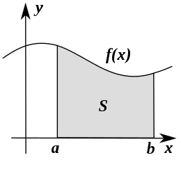
Definition 3.16 (Verteilungsfunktion) Die Verteilungsfunktion einer stetigen Zufallsvariablen gibt wie im diskreten Fall an, wie groß die Wahrscheinlichkeit für eine Realisation kleiner oder gleich einem vorgegebenen Realisationswert \(x\) ist.\(\square\)
Die Verteilungsfunktion \(F(x)\) ist analog zur kumulierten Häufigkeitsverteilung zu verstehen, vgl. Abbildung 3.23. \(\square\)

Definition 3.17 (Stetige Wahrscheinlichkeitsverteilung) Bei stetigen Zufallsvariablen \(X\) geht man von unendlich vielen Ausprägungen aus; die Wahrscheinlichkeit einer bestimmten Ausprägung ist Null: \(Pr(X=x_j)=0, \quad j=1,...,+\infty \square\).
Beispiel 3.21 (Wahrscheinlichkeitsverteilung für die Körpergröße) So ist die Wahrscheinlichkeit, dass eine Person exakt 166,66666666… cm groß ist, (praktisch) Null. Man gibt stattdessen die Dichte der Wahrscheinlichkeit an: Das ist die Wahrscheinlichkeit(smasse) pro Einheit von \(X\).\(\square\)
Für praktische Fragen berechnet man zumeist die Wahrscheinlichkeit von Intervallen, s. Abbildung 3.22.
3.5 Aufgaben
Bearbeiten Sie die Aufgabe in der angegeben Literatur.
Die Webseite datenwerk.netlify.app stellt eine Reihe von einschlägigen Übungsaufgaben bereit. Sie können die Suchfunktion der Webseite nutzen, um die Aufgaben mit den folgenden Namen zu suchen:
3.5.1 Paper-Pencil-Aufgaben
Die Wahrscheinlichkeitstheorie bildet zusammen mit der Statistik das Fachgebiet der Stochastik.↩︎
\(10^6 = 1000000\)↩︎
Beispiele für Zufallsexperimente sind das Werfen einer Münze, das Ziehen einer Karte aus einem Kartenspiel, das Messen eines Umweltphänomens wie der Temperatur oder die Anzahl der Kunden, die einen Laden betreten. In jedem dieser Fälle sind die möglichen Ergebnisse nicht im Voraus bekannt und hängen von nicht komplett bekannten Faktoren ab.↩︎
leider gibt es eine Fülle synonymer Namen: Ereignisraum, Elementarereignisraum, Ergebnisraum oder Grundraum↩︎
\(A\) ist eine Teilmenge von \(B\), wenn alle Elemente von \(A\) auch Teil von \(B\) sind.↩︎
Schon wieder.↩︎
Ein Ergebnis ist ein Element von \(\Omega\). Elementarereignisse sind die einelementigen Teilmengen von \(\Omega\). Konzeptionell sind die beiden Begriffe sehr ähnlich, vgl. https://de.wikipedia.org/wiki/Ergebnis_(Stochastik). Wir werden uns hier auf den Begriff Elementarereignis konzentrieren und den Begriff Ergebnis nicht weiter verwenden.↩︎
Na toll.↩︎
Die Menge aller Teilmengen einer Menge \(A\) nennt man die Potenzmenge \(\mathcal{P}(A)\), vgl. hier.↩︎
Manchmal wird diese Art der Wahrscheinlichkeit auch epistemologische Wahrscheinlichkeit genannt.↩︎
die sog. “Praxis”↩︎
Ein Herr Kolmogorov hat das mal aufgeschrieben.↩︎
da einfach und deutlich↩︎
S wie Summe↩︎
{kind=link}